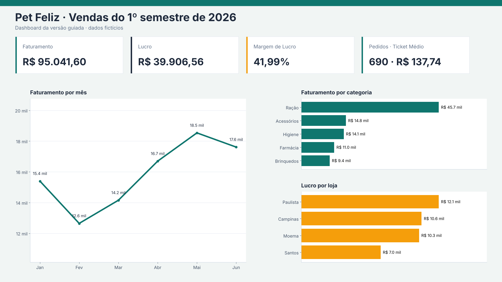

Uso exclusivo do professor Gabarito do professor · Aula 15 · Projeto Guiado (Pet Feliz)
Solução da versão guiada: consultas M, calendário, 3 colunas calculadas, 5 medidas, relacionamentos, testes e todos os números de conferência.
Como os números foram obtidos. Recalculados em Python a partir dos arquivos do pacote do aluno. M e DAX não foram executados no Power BI Desktop (indisponível aqui). Rode a solução uma vez antes de liberar a aula.
Arquivos Oficiais · Aula 15 (Projeto Guiado)
Planilha de gabarito e pacote completo com scripts M e DAX da versão guiada.
Números-chave R$ 95.041,60 Faturamento
R$ 39.906,56 Lucro
41,99% Margem de lucro
690 Pedidos
R$ 137,74 Ticket médio
1.123 Linhas de fVendas
1 · Power Query (M) pPasta Copiar // Início > Gerenciar Parâmetros > Novo Parâmetro (Nome: pPasta | Tipo: Texto)
"C:\Cursos\PetFelizFacil\" meta [IsParameterQuery=true, Type="Text", IsParameterQueryRequired=true]fVendas Copiar let
Fonte = Csv.Document(File.Contents(pPasta & "Vendas.csv"),
[Delimiter = ";", Encoding = 65001, QuoteStyle = QuoteStyle.None]),
Cabecalho = Table.PromoteHeaders(Fonte, [PromoteAllScalars = true]),
Tipos = Table.TransformColumnTypes(Cabecalho,
{{"IDPedido", Int64.Type}, {"Data", type date}, {"CodLoja", Int64.Type}, {"SKU", type text},
{"Qtd", Int64.Type}, {"PrecoUnit", type number}, {"Desconto", type number}}, "pt-BR")
in
TiposdLojas Copiar let
Fonte = Csv.Document(File.Contents(pPasta & "Lojas.txt"),
[Delimiter = "#(tab)", Encoding = 65001, QuoteStyle = QuoteStyle.None]),
Cabecalho = Table.PromoteHeaders(Fonte, [PromoteAllScalars = true]),
Tipos = Table.TransformColumnTypes(Cabecalho,
{{"CodLoja", Int64.Type}, {"NomeLoja", type text}, {"Cidade", type text}, {"UF", type text}}, "en-US")
in
TiposdProdutos Copiar let
Fonte = Excel.Workbook(File.Contents(pPasta & "Produtos.xlsx"), null, true),
Aba = Fonte{[Item = "Produtos", Kind = "Sheet"]}[Data],
Cabecalho = Table.PromoteHeaders(Aba, [PromoteAllScalars = true]),
Tipos = Table.TransformColumnTypes(Cabecalho,
{{"SKU", type text}, {"Produto", type text}, {"Categoria", type text},
{"CustoUnit", type number}, {"PrecoLista", type number}}, "en-US")
in
Tipos2 · Calendário Copiar dCalendario =
SELECTCOLUMNS (
CALENDAR ( DATE ( 2026, 1, 1 ), DATE ( 2026, 12, 31 ) ),
"Data", [Date],
"Ano", YEAR ( [Date] ),
"MesNum", MONTH ( [Date] ),
"Mes", SWITCH ( MONTH ( [Date] ), 1, "Jan", 2, "Fev", 3, "Mar", 4, "Abr", 5, "Mai", 6, "Jun",
7, "Jul", 8, "Ago", 9, "Set", 10, "Out", 11, "Nov", "Dez" ),
"AnoMes", FORMAT ( [Date], "yyyy-mm" )
)Marcar como tabela de datas (coluna Data) e classificar Mes por MesNum. Esperado: 365 linhas.
3 · Relacionamentos # Fato (*) Dimensão (1) 1 fVendas[Data]dCalendario[Data]2 fVendas[CodLoja]dLojas[CodLoja]3 fVendas[SKU]dProdutos[SKU]
Todos 1:*, filtro em uma direção (dimensão → fato).
4 · Colunas calculadas Copiar fVendas[Faturamento Linha] = fVendas[Qtd] * fVendas[PrecoUnit] * ( 1 - fVendas[Desconto] )Copiar fVendas[Custo Linha] = fVendas[Qtd] * RELATED ( dProdutos[CustoUnit] )Copiar dProdutos[Faixa de Preço] =
IF ( dProdutos[PrecoLista] < 30, "Econômico",
IF ( dProdutos[PrecoLista] < 100, "Intermediário", "Premium" ) )Conferência Esperado Some a coluna Faturamento Linha (arraste para um cartão e escolha Soma). Total? R$ 95.041,60 Some a coluna Custo Linha. Total? R$ 55.135,04 Quantos produtos têm Faixa de Preço = Premium? 4 Quantos produtos têm Faixa de Preço = Econômico? 3
5 · Medidas Copiar Faturamento = SUM ( fVendas[Faturamento Linha] )
Lucro = [Faturamento] - SUM ( fVendas[Custo Linha] )
Margem de Lucro = DIVIDE ( [Lucro], [Faturamento] )
Pedidos = DISTINCTCOUNT ( fVendas[IDPedido] )
Ticket Médio = DIVIDE ( [Faturamento], [Pedidos] )Conferência Esperado Medida [Faturamento] sem filtro R$ 95.041,60 [Faturamento] com a segmentação Mes = Mar R$ 14.153,91 Medida [Lucro] sem filtro R$ 39.906,56 [Lucro] com Loja = Santos e Mes = Jun R$ 1.398,32 Medida [Margem de Lucro] sem filtro (em %) 41,99% [Margem de Lucro] da categoria Ração (em %) 36,98% Medida [Pedidos] sem filtro 690 [Pedidos] com Loja = Moema e Categoria = Ração 89 Medida [Ticket Médio] sem filtro R$ 137,74 [Ticket Médio] com Loja = Santos e Mes = Jun R$ 102,41 Bônus: [Faturamento] por Faixa de Preço. Quanto vendeu a faixa Premium? R$ 55.935,48
6 · Todas as conferências ID Etapa Pergunta Esperado i1 1 · Importar Quantas linhas tem a tabela fVendas? 1.123 i2 1 · Importar Quantas linhas tem a tabela dLojas? 4 i3 1 · Importar Quantas linhas tem a tabela dProdutos? 12 i4 1 · Importar Depois de ajustar os tipos, quantas colunas de fVendas ficaram como “Número decimal”? 2 k1 2 · Calendário Quantas linhas tem a dCalendario? (um ano inteiro de 2026) 365 m1 3 · Relacionar Quantos relacionamentos você criou? 3 t1 3 · Teste do modelo Tabela com dLojas[NomeLoja] + Soma de fVendas[Qtd]: quantos itens vendeu a loja Paulista? E nenhuma linha “(Em branco)” aparece. 416 t2 3 · Teste do modelo Tabela com dProdutos[Categoria] + Soma de fVendas[Qtd]: quantos itens da categoria Ração? 502 t3 3 · Teste do modelo Tabela com dCalendario[Mes] + Soma de fVendas[Qtd]: quantos itens em Março? 214 cc1 4 · Colunas calculadas Some a coluna Faturamento Linha (arraste para um cartão e escolha Soma). Total? R$ 95.041,60 cc2 4 · Colunas calculadas Some a coluna Custo Linha. Total? R$ 55.135,04 cc3 4 · Colunas calculadas Quantos produtos têm Faixa de Preço = Premium? 4 cc3b 4 · Colunas calculadas Quantos produtos têm Faixa de Preço = Econômico? 3 md1 5 · Medidas Medida [Faturamento] sem filtro R$ 95.041,60 md1b 5 · Medidas [Faturamento] com a segmentação Mes = Mar R$ 14.153,91 md2 5 · Medidas Medida [Lucro] sem filtro R$ 39.906,56 md2b 5 · Medidas [Lucro] com Loja = Santos e Mes = Jun R$ 1.398,32 md3 5 · Medidas Medida [Margem de Lucro] sem filtro (em %) 41,99% md3b 5 · Medidas [Margem de Lucro] da categoria Ração (em %) 36,98% md4 5 · Medidas Medida [Pedidos] sem filtro 690 md4b 5 · Medidas [Pedidos] com Loja = Moema e Categoria = Ração 89 md5 5 · Medidas Medida [Ticket Médio] sem filtro R$ 137,74 md5b 5 · Medidas [Ticket Médio] com Loja = Santos e Mes = Jun R$ 102,41 bn1 5 · Bônus Bônus: [Faturamento] por Faixa de Preço. Quanto vendeu a faixa Premium? R$ 55.935,48 e1 6 · Dashboard Dashboard: com a segmentação Loja = Santos, o cartão de Faturamento mostra? R$ 16.448,70
7 · Dashboard de referência Visual Campos 4 cartões [Faturamento], [Lucro], [Margem de Lucro], [Pedidos] (+ [Ticket Médio]) Linhas Eixo dCalendario[Mes] · [Faturamento] Barras dProdutos[Categoria] · [Faturamento] Barras dLojas[NomeLoja] · [Lucro] Segmentação dLojas[NomeLoja]

8 · Erros comuns Erro do aluno O que ele verá Esqueceu o desconto na coluna Faturamento Linha Faturamento = R$ 97.763,50 (certo R$ 95.041,60) [Pedidos] com COUNTROWS(fVendas) em vez de DISTINCTCOUNT Pedidos = 1.123 (certo 690); ticket cai para R$ 84,63 Criou [Custo Linha] em dProdutos ou sem RELATED Erro de coluna não encontrada, ou custo igual ao preço de tabela sem multiplicar por Qtd Margem sobre o custo (Lucro ÷ Custo) Margem = 72,38% (certo 41,99%) Não classificou Mes por MesNum Meses em ordem alfabética (Abr, Fev, Jan, Mar, Mai, Jun) Deixou Data como texto em fVendas Não consegue criar o relacionamento com o calendário; teste t3 vem em branco Preço lido com ponto (cultura en-US) Faturamento absurdamente alto (139,90 vira 13.990): reimportar usando a localidade Português (Brasil) Relacionamento com direção bidirecional ou invertido Segmentação de Loja “encolhe” as outras segmentações; testes de filtro cruzado se comportam diferente
9 · Correção Critério Pontos Importação e tipos 15 Calendário e relacionamentos (testes batendo) 20 3 colunas calculadas 20 5 medidas 30 Dashboard 15